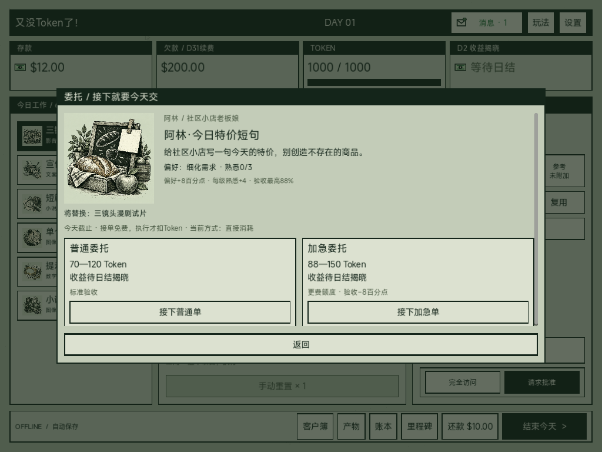
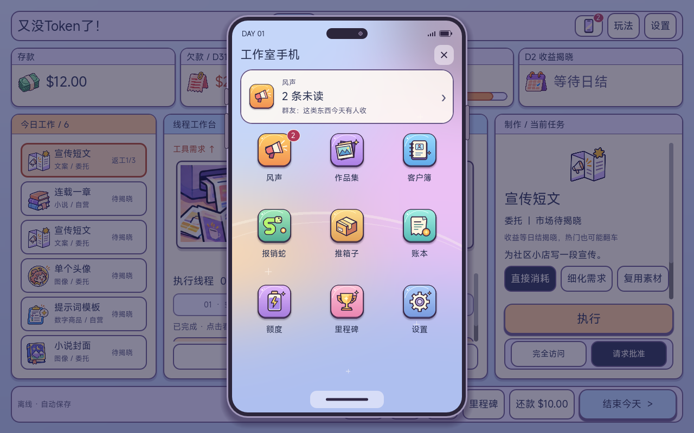
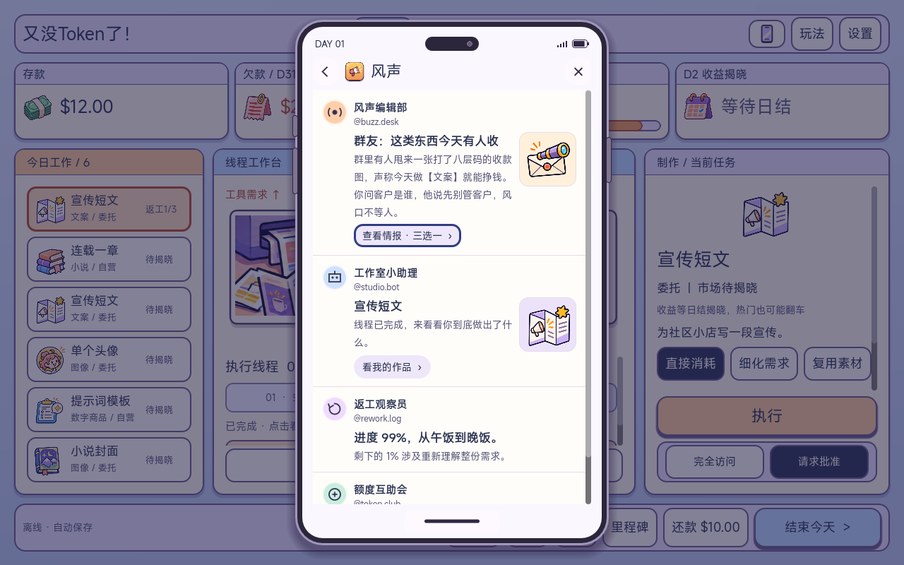
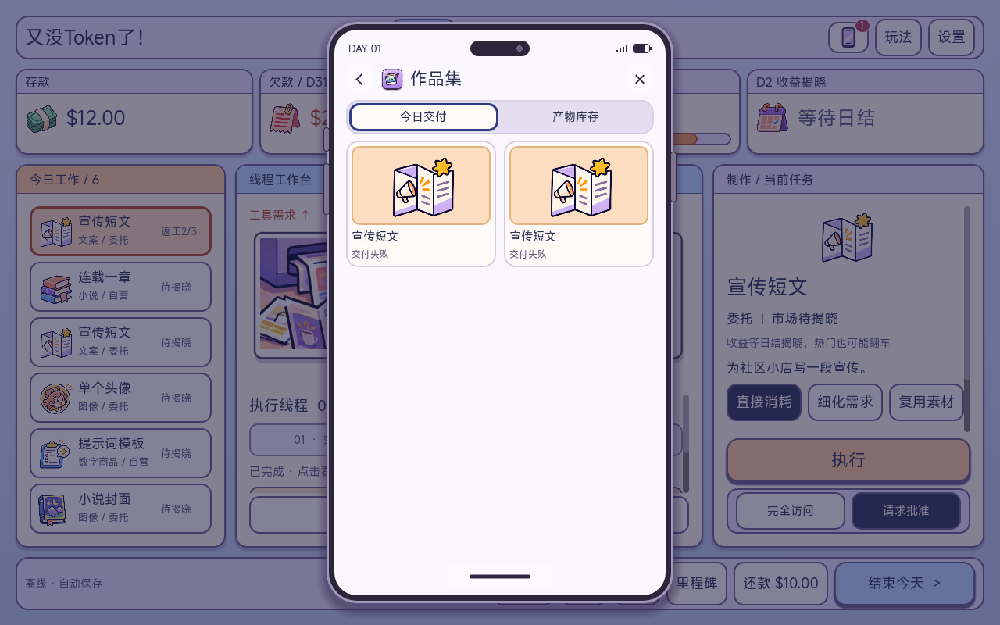

个人作品 / 模拟经营
又没Token了！
开工作室的第一天，存款只有 12 美元，会员费已经欠了 200 美元。
从漫剧试片、宣传短句到提示词模板，每件活都要花 Token。今天能做几单、要留多少给返工，都得在看到到账金额之前决定。
Godot / GDScript · Windows 可玩原型 0.14.2 · 画面取自同版本导出包的测试场景
 第一天的工作台，预览三镜头漫剧试片。 查看原图 ↗
第一天的工作台，预览三镜头漫剧试片。 查看原图 ↗
接什么单，留多少 Token
普通委托还是加急
接了委托就得当天交。委托面板并排给出两档预计用量，加急占用更多预算，验收也更难。两边收入都要到日结才揭晓。

同一份短句委托的普通与加急预计消耗。 查看原图 ↗
最多三单同时开工
选好项目，点执行才扣 Token。工作台并排显示线程倒计时、已花额度和作品预览。可以把三个线程开满，也可以留一笔额度，给意外返工用。
 三个线程同时制作，进度和已扣额度列在预览下方。 查看原图 ↗
三个线程同时制作，进度和已扣额度列在预览下方。 查看原图 ↗
收工前的最后一次取舍
角色变脸了，这版还救不救
返工回执列出出错的分镜、实际支出和修复报价。挑一处补救、整份重跑，或者止损，把还能用的片段存成图像素材。
 翻车回执把问题、成本和可选操作放在一起。 查看原图 ↗
翻车回执把问题、成本和可选操作放在一起。 查看原图 ↗
收入要等日结才知道
委托验收和自营销售在日结入账。结束当天后只向前推进。「重置之神」有机会补满额度，手动重置则可以留到急需开工时再用。
 结束当天才揭晓到账金额，玩家可以核对存款变化。 查看原图 ↗
结束当天才揭晓到账金额，玩家可以核对存款变化。 查看原图 ↗
制作线程继续跑，拿起手机看进展
顶栏用未读角标提醒玩家打开手机。看动态、翻作品相册或查额度时，已经开工的线程仍会继续处理；退出手机后可以接着做经营决策。

手机把动态、作品和额度集中在一个入口。 查看原图 ↗
从「风声」区分情报和交稿
动态把工作室情报与实际交稿回执按时间列出。玩家可以先读消息，再决定是否采用对应情报。

「风声」把情报和实际交稿回执放进同一条动态流。 查看原图 ↗
用作品相册回看本局成果
相册以双列展示作品，可以区分已交付、已上架和库存内容，也能回看有预览的试片。

作品相册可以回看已交付、库存及带预览的试片。 查看原图 ↗
工作室关门，收藏还在
第 31 天要续费。能不能撑到那天看账本，这一局做过什么则会留下记录。
用里程碑定下一局目标
里程碑按类别显示解锁条件和本局进度。开下一局前，可以找一项还没做过的事试试。
 里程碑记录本局尝试，为下一局提供不同的目标。 查看原图 ↗
里程碑记录本局尝试，为下一局提供不同的目标。 查看原图 ↗
把这一局的纪念品带走
关停结算会回顾开工、翻车、Token 消耗和到账金额。本局解锁的纪念品会永久留在收藏里。
 工作室关停后结算本局履历，将已达成的奖励收进收藏。 查看原图 ↗
工作室关停后结算本局履历，将已达成的奖励收进收藏。 查看原图 ↗
返回首页个人作品 ↑